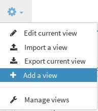

Managing Views¶
Note
Don’t forget to look at Userviews Section
Creating / Removing a View¶
To create a view, just use the “add view” button located here :
And fill in the form
You can add tag to help you order views in other forms like in view management
or in default view editor
To remove a view, go to userview view, search the view you want to delete and clic remove button
Containers and Widgets¶
The next step is to put some widgets on a view.
In most of case, you will first have to include Widgets into containers
Don’t forget to add options to widgets with the Canopsis Mixins feature